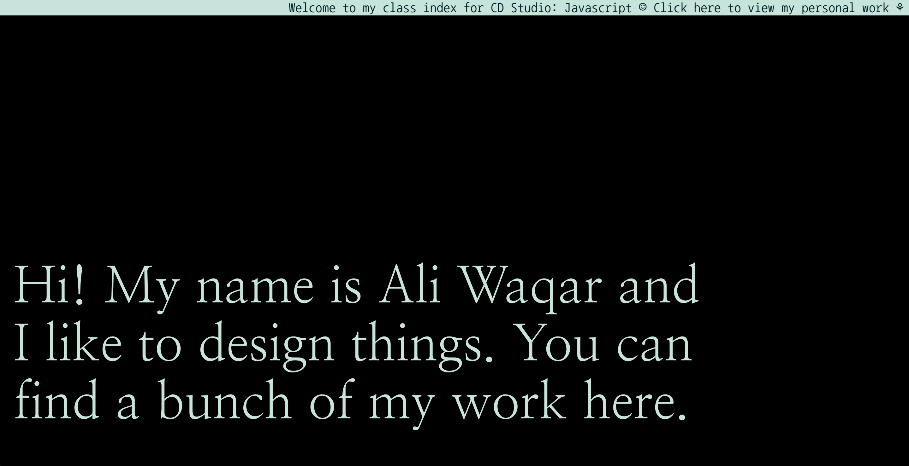
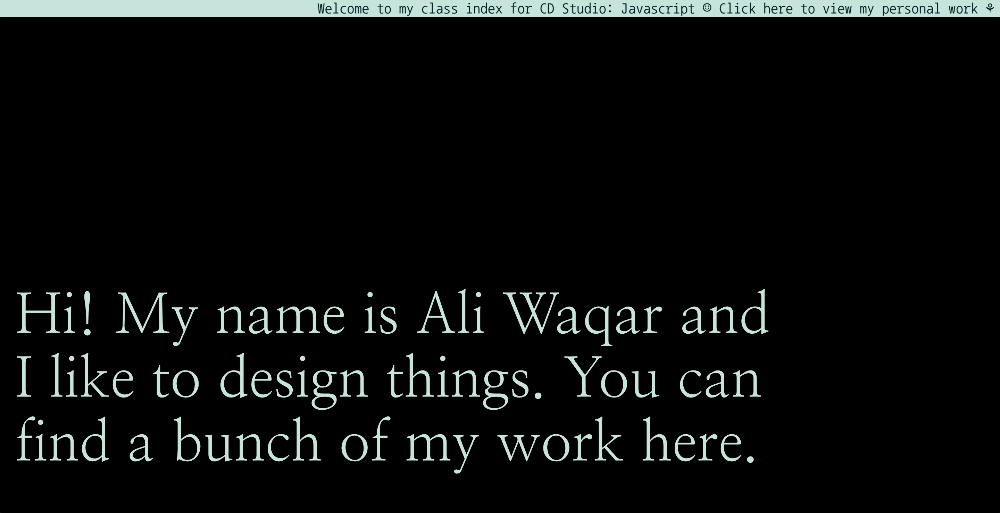
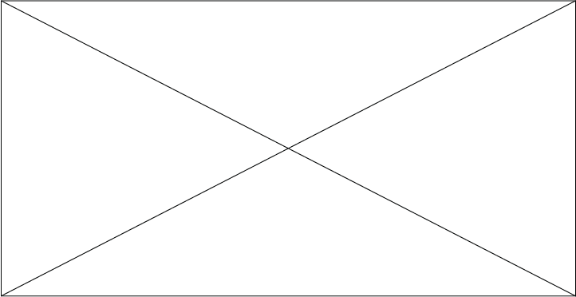
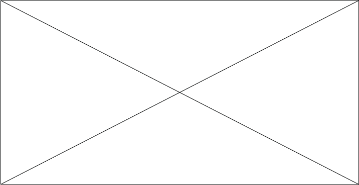

Index


This assignment tasked us with designing and building a website that be home to a growing index of the work we will create for this class.

API


Design and develop a website which incorporates an external data feed, using one of the APIs discussed inclass.
Library

This assignment is meant to expand a student’s understanding of customized user experience and interactivityin a mobile context. Each student will select an object from which a user-site relationship will be translated
Ali Waqar
is a graphic designer and artist currently based in Muscat, Oman. He is pursuing a BFA in Communication Design at Parsons School of Design. Waqar primarily works in editorial design, photography, illustration and crochet. He is also interested in learning more about the web.
Email: ghula605@newschool.edu
Arena: ali-waqar
IG: @ibn_waqar
Email: ghula605@newschool.edu
Arena: ali-waqar
IG: @ibn_waqar
CD Studio: Javascript will focus on extending students' knowledge of code to web and cloud. Students will be learning JavaScript, the programming language of the Web. Students will be introduced to a variety of application from server-side network programming, game development, and the creation of desktop and mobile applications.
Learn more ➛
Learn more ➛